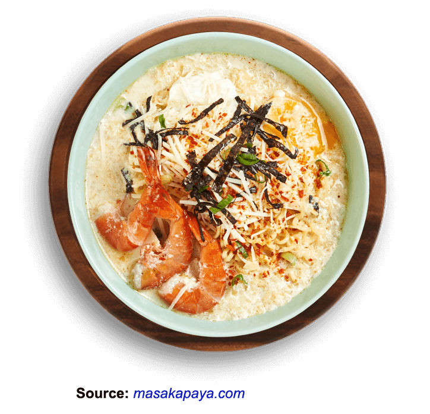
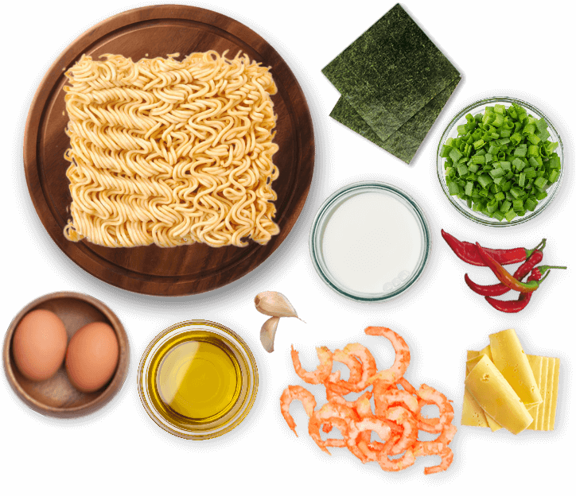

Noodles!
Indomie Soup with Milk and Cheese

Ingredients:
- 1 pack of Indomie Special Chicken Flavor
- 1 Egg
- 1 tbsp cooking oil
- 1/4 onion (chopped)
- 5 pieces of Shrimp
- 250 ml Fresh Milk
- 1 Red Chili Pepper
- 2 tbsp of Cheddar Cheese (grated)
- 2 tbsp Leek (sliced)
- 1 tbsp Chili Powder
- 1 pack of Dried Seaweed

Preparation time: 30 minutes
Cooking Instructions:
-
Put Indomie Special Chicken Flavor in boiling water for 3 minutes
without adding the seasoning. Lift, drain.
- Boil eggs. Drain.
-
In another pan, heat the cooking oil, sauté onion until fragrant. Add
shrimp, stir-fry until the color changes. Lift the shrimp, set aside.
-
Pour the stir-fried onion with fresh milk, add the cayenne. Cook until
it starts to boil. Add Indomie that has been boiled. Mix.
- Turn off the heat. Add Indomie seasonings, stir quickly.
-
Pour into a serving bowl. Add grated cheese, sprinkle with sliced fried
onion, chili powder and dried seaweed.
- Ready to serve.
Back to Main Page